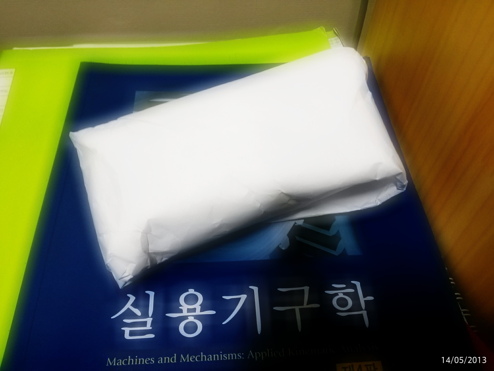
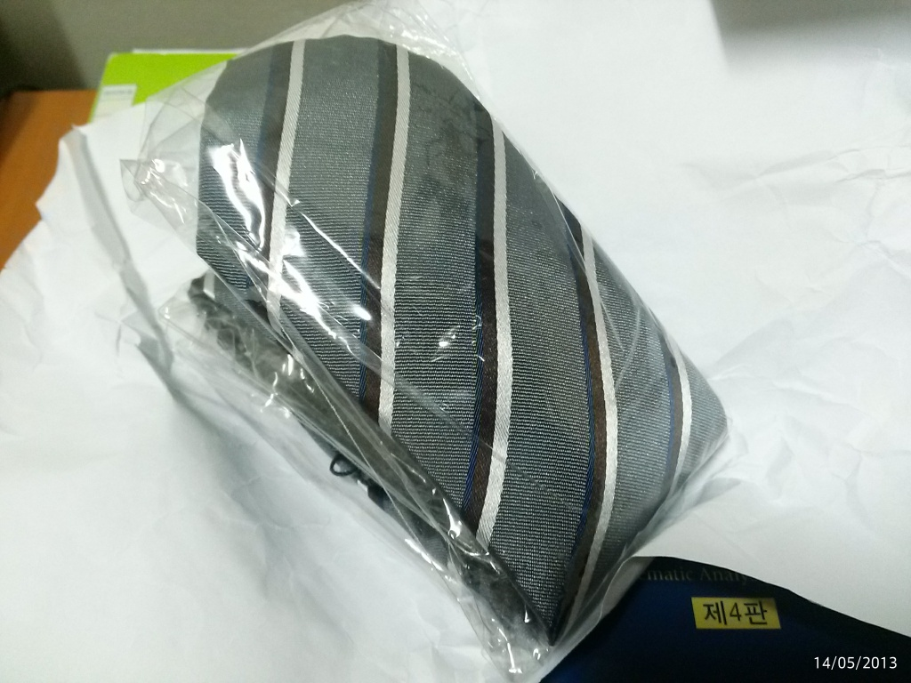

겸임 교수라고 강의를 나가지만 그 동안 전혀 그런 생각을 안하고 있었는데 나도 "선생님"이라고 생각해주는 사람이 있나 보다. 생전 처음 스승의 날이라고 선물을 받았다.
게다가 좀 나이가 든 북에서 온 학생이 준 선물이라 다른 선물과 더욱 다른 느낌이다. “허름한”† A4 용지로 싼 넥타이 선물. 내가 정말 받을 자격이 있는진 모르지만 아무튼 오늘을 기억해둬야겠다.
고맙습니다. 학생 여러분!


† 윤창중이 기자 회견에서 반복해 말해 익숙해진 말